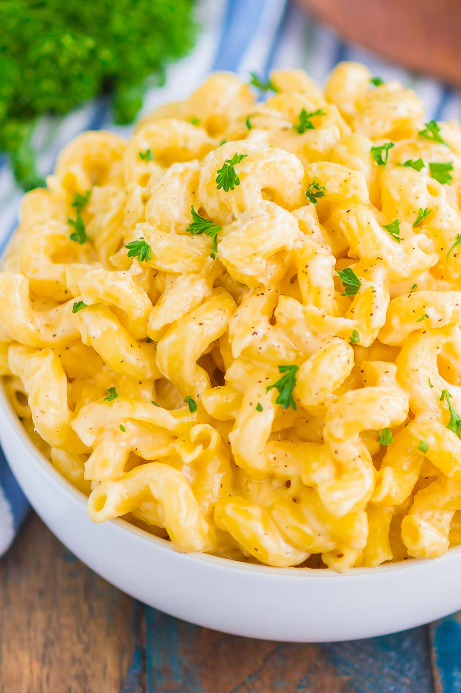

Mac n cheese συνταγη

Περιγραφη
Eίναι ένα πιάτο μαγειρεμένων ζυμαρικών μακαρονιών
και μια σάλτσα τυριών, συνήθως cheddar. Μπορεί
επίσης να ενσωματώσει άλλα συστατικά, όπως ψίχουλα ή κρέας.
Συστατικα
- 20 γρ. βουτυρο
- 20 γρ. αλεύρι γ.ο.χ.
- 300 γρ. γάλα, σε θερμοκρασία δωματίου
- 150 γρ. τσένταρ, τριμμένο
- αλάτι
- πιπέρι
- 200 γρ. κοφτό μακαρονάκι, βρασμένο
- 2 κ.σ. μαϊντανό, ψιλοκομμένο, για το σερβίρισμα
Μέθοδος Εκτέλεσης
- Προθερμαίνουμε τον φούρνο στους 200° C στον αέρα.
- Σε μια κατσαρόλα σε μέτρια φωτιά λιώνουμε το βούτυρο.
- Προσθέτουμε το αλεύρι και ανακατεύουμε με ένα σύρμα χειρός.
- Προσθέτουμε το γάλα σε δόσεις ανακατεύοντας παράλληλα με το σύρμα.
- Ρίχνουμε το τσένταρ, αλάτι, και πιπέρι. Ανακατεύουμε μέχρι να λιώσει το τσένταρ.
- Αποσύρουμε την κατσαρόλα από τη φωτιά και ρίχνουμε το κοφτό μακαρονάκι.
- Ανακατεύουμε καλά με μια κουτάλα και αδειάζουμε το μείγμα σε ατομικά πυρίμαχα σκεύη ή σε ένα πυρίμαχο σκεύος 20x25 εκ.
- Ψήνουμε για 10-15 λεπτά.
- Αφαιρούμε από τον φούρνο και σερβίρουμε με ψιλοκομμένο μαϊντανό.